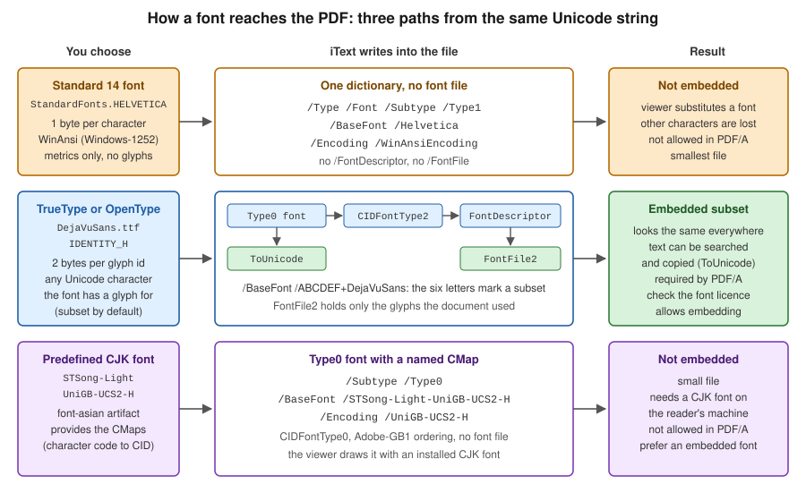

Fonts & Unicode
|
This content was generated with the assistance of AI and should be verified against the official documentation before being relied on in production. |
A PDF viewer can only draw a character if it has a glyph for it, and the PDF file decides where that glyph comes from: from
a font the viewer is expected to have, from a font program stored inside the file, or from a named character collection
that the viewer maps to one of its own fonts. Most "my accented letters are missing" and "my Chinese text is empty" bugs
are a mismatch between those three options and the text that was written. This page explains the options and how iText
9.8.0 (as of 2026-10-09) exposes them for the Bookshelf Billing invoices: the 14 standard fonts, embedded and subset
TrueType and OpenType fonts addressed with PdfEncodings.IDENTITY_H, the FontProvider and FontSet pair that selects
a font per character, bold and italic faces, Chinese, Japanese and Korean (CJK) text, the vertical writing mode that
arrived in 9.8, and right-to-left and complex scripts, which need the commercial pdfCalligraph add-on.
The Maven setup, the first Hello PDF and the controller that returns the bytes are in Getting Started with Spring Boot. The basic layout elements that these fonts are applied to are in Layout Elements. The font objects inside the file are described in the fonts section of How a PDF File Works, and the rule that PDF/A forbids non-embedded fonts is in PDF Standards & Conformance.
How a PDF decides which glyph to draw
A PDF text operator carries a string of bytes and a font resource name. The font dictionary says how to turn the bytes into glyphs, and the glyph outlines come from somewhere. Three terms cover most of what you will meet:
-
A simple font (Type 1 or TrueType) maps one byte to one glyph through an encoding, so it can address at most 256 glyphs. The 14 standard fonts and every font created with
PdfEncodings.WINANSIare simple fonts. -
A composite font (Type 0) maps a sequence of bytes, usually two, to a character identifier (CID), and the CID to a glyph. With
PdfEncodings.IDENTITY_HiText writes the glyph index of the font program directly, two bytes per glyph, which allows 65,536 glyphs and therefore any script the font covers. TheHstands for horizontal writing, andPdfEncodings.IDENTITY_Vis the vertical variant. -
A font program is the file that holds the outlines: TrueType (
.ttf, or a.ttccollection of faces), OpenType with TrueType outlines, OpenType with CFF outlines (.otf), or the legacy Type 1 pair. Embedding means copying (part of) that file into the PDF so that the reader does not depend on the fonts installed on its machine.
Embedding also needs a way back to text. A composite font is written with a ToUnicode map that tells a viewer which
Unicode character each glyph represents, and that map is what makes searching, copying and text extraction work. The
figure compares the three paths that iText can take, and what each leaves in the file.

The standard 14 fonts
Every PDF reader must be able to draw 14 fonts without a font file: four Helvetica faces, four Times faces, four Courier
faces, Symbol and ZapfDingbats. iText ships only their metrics (the .afm files in the io module), which is enough to
measure text. It cannot embed them, because the outlines are proprietary. They are simple fonts with a one-byte encoding,
so only the characters of that encoding exist. The default font of every iText Paragraph is Helvetica, which is why a
first Hello PDF works without any font configuration.
The example writes the same invoice line with Helvetica and with an embedded font. It uses these Maven coordinates, which
are the same as in the getting started page (itext-core is a POM aggregator, hence type pom):
<dependency>
<groupId>com.itextpdf</groupId>
<artifactId>itext-core</artifactId>
<version>9.8.0</version>
<type>pom</type>
</dependency>iText Core is licensed under the AGPLv3, or under a commercial licence from iText. The Bouncy Castle adapter that signing
and encryption need is not required for fonts, so it is left out of this page. Put DejaVuSans.ttf (a free font, see
the licence link in the references) in a fonts directory next to where you run the program.
package com.example.billing;
import com.itextpdf.io.font.PdfEncodings;
import com.itextpdf.io.font.constants.StandardFonts;
import com.itextpdf.kernel.font.PdfFont;
import com.itextpdf.kernel.font.PdfFontFactory;
import com.itextpdf.kernel.font.PdfFontFactory.EmbeddingStrategy;
import com.itextpdf.kernel.pdf.PdfDocument;
import com.itextpdf.kernel.pdf.PdfWriter;
import com.itextpdf.layout.Document;
import com.itextpdf.layout.element.Paragraph;
import java.io.IOException;
public class StandardVersusEmbedded {
public static void main(String[] args) throws IOException {
try (PdfDocument pdf = new PdfDocument(new PdfWriter("target/standard-versus-embedded.pdf"));
Document document = new Document(pdf)) {
// Standard 14: not embedded, WinAnsi (Windows-1252) only
PdfFont helvetica = PdfFontFactory.createFont(StandardFonts.HELVETICA);
// Embedded TrueType, Unicode through Identity-H, subset by default
PdfFont dejaVu = PdfFontFactory.createFont(
"fonts/DejaVuSans.ttf", PdfEncodings.IDENTITY_H, EmbeddingStrategy.FORCE_EMBEDDED);
String text = "Invoice BB-2026-0042: Niño, café, € 24,90, Ω, Ł, Привет";
document.add(new Paragraph("Helvetica: " + text).setFont(helvetica));
document.add(new Paragraph("DejaVu Sans: " + text).setFont(dejaVu));
System.out.println("helvetica embedded=" + helvetica.isEmbedded());
System.out.println("dejaVu embedded=" + dejaVu.isEmbedded() + " subset=" + dejaVu.isSubset());
}
}
}Running it and extracting the text of the generated file shows what a one-byte font does with text it cannot encode. The
Helvetica line comes back ending after the amount (24,90,) with nothing after it: the accented Latin letters and the
euro sign survive because Windows-1252 contains them, while the Greek omega, the Polish letter with a stroke and the
Cyrillic word are dropped without an exception. Only the embedded line contains all of them. A font report of the file (the
FontReport class below) shows /Helvetica as a Type1 font with no font file, and /ATGTFL+DejaVuSans as a Type0 font
with an embedded font file. The example derives from the iText knowledge base chapter on fonts and the PdfFontFactory
API page, linked in the references.
The consequences for a billing back office follow from that behaviour. Use the standard fonts only when every character
that can ever appear, including customer names, is in Windows-1252, and never when the output must be PDF/A. A document
that claims PDF/A and uses Helvetica fails with PdfAConformanceException: All the fonts must be embedded, which is the
message that a PDF/A-2u test, described near the end of this page, produced for this font. For customer-facing documents,
embed a font.
Embedding a font
PdfFontFactory.createFont builds a PdfFont for one PdfDocument. The overload that matters in iText 9 takes the font
source, an encoding and an EmbeddingStrategy:
-
FORCE_EMBEDDEDembeds the font program, or fails. -
PREFER_EMBEDDEDembeds it when that is possible and otherwise falls back to a reference. -
PREFER_NOT_EMBEDDEDandFORCE_NOT_EMBEDDEDwrite a reference when the font allows it, which is only meaningful for the standard 14 and the predefined CJK fonts.
The font source can be a path, a byte array, a FontProgram, or one face of a .ttc collection through
createTtcFont. A FontProgram, created with FontProgramFactory, is the parsed font file: it does not belong to a
document and can be built once and shared. A PdfFont belongs to exactly one PdfDocument, because it records which
glyphs that document used. The knowledge base chapter says the same for iText 7, and it still holds in 9.8.0.
package com.example.billing;
import com.itextpdf.io.font.FontProgram;
import com.itextpdf.io.font.FontProgramFactory;
import com.itextpdf.io.font.PdfEncodings;
import com.itextpdf.kernel.font.PdfFont;
import com.itextpdf.kernel.font.PdfFontFactory;
import com.itextpdf.kernel.font.PdfFontFactory.EmbeddingStrategy;
import com.itextpdf.kernel.pdf.PdfDocument;
import com.itextpdf.kernel.pdf.PdfWriter;
import com.itextpdf.layout.Document;
import com.itextpdf.layout.element.Paragraph;
import java.io.IOException;
import java.io.InputStream;
public class EmbeddedFontSources {
public static void main(String[] args) throws IOException {
try (PdfDocument pdf = new PdfDocument(new PdfWriter("target/font-sources.pdf"));
Document document = new Document(pdf)) {
// 1. From a file path
PdfFont fromPath = PdfFontFactory.createFont(
"fonts/DejaVuSans.ttf", PdfEncodings.IDENTITY_H, EmbeddingStrategy.FORCE_EMBEDDED);
// 2. From bytes, for example a classpath resource inside a Spring Boot jar
byte[] bytes;
try (InputStream in = EmbeddedFontSources.class.getResourceAsStream("/fonts/DejaVuSans.ttf")) {
if (in == null) {
throw new IOException("fonts/DejaVuSans.ttf is not on the classpath");
}
bytes = in.readAllBytes();
}
// The FontProgram is the parsed file: it can be cached and shared between documents
FontProgram program = FontProgramFactory.createFont(bytes);
PdfFont fromBytes = PdfFontFactory.createFont(
program, PdfEncodings.IDENTITY_H, EmbeddingStrategy.FORCE_EMBEDDED);
// 3. One face of a .ttc collection, chosen by index
PdfFont fromCollection = PdfFontFactory.createTtcFont(
"fonts/NotoSansCJK-Regular.ttc", 0, PdfEncodings.IDENTITY_H, EmbeddingStrategy.FORCE_EMBEDDED, true);
document.add(new Paragraph("From a path: Invoice BB-2026-0042").setFont(fromPath));
document.add(new Paragraph("From bytes: Niño, café, Привет").setFont(fromBytes));
document.add(new Paragraph("From a collection: 书店账单").setFont(fromCollection));
}
}
}Reading the bytes from the classpath, as the second variant does, is how a font that is packaged inside a Spring Boot jar
is loaded, because a jar entry is not a file path. The third variant needs a collection file; the example assumes the
file name NotoSansCJK-Regular.ttc, so adjust it to a collection you have the right to use. The example derives from
the PdfFontFactory and FontProgramFactory API pages.
Two encodings come up in practice. PdfEncodings.WINANSI (and the other single byte code pages such as CP1250) writes
a simple font that is smaller but limited to 256 characters, and is meant for Western European text. PdfEncodings.IDENTITY_H
writes a composite font that can show any character in the font, and is the right default for new code. Older tutorials,
including the iText 7 knowledge base chapter, show PdfEncodings.WINANSI with a boolean embedded flag and
FontConstants. In iText 9 the constants are in StandardFonts, the flag was replaced by EmbeddingStrategy, and the
convenient createRegisteredFont path that those articles show is still present but registers fonts globally, which is a
poor fit for a multi-tenant service.
Fonts have licences of their own. A font file records whether the publisher allows embedding, and iText exposes that flag
as FontProgram.getFontNames().allowEmbedding(). A commercial font that forbids embedding cannot be used for PDF/A
output, and an embedded subset of a font that allows only "preview and print" embedding is still a redistribution of
part of that font. Prefer fonts under an open licence such as the SIL Open Font License, which covers the Noto and DejaVu
families, and do not commit font binaries to a repository whose licence differs from the font’s. The examples on this
page only ever read the files from disk or from the classpath.
Subsetting
Embedding a whole font into every invoice is wasteful: DejaVu Sans is about 750 KB, a CJK font can be 15 MB or more, and
a monthly job can create thousands of files. iText subsets by default, which means it writes only the glyphs that the
document used, and prefixes the font name with six random capital letters and a plus sign (ATGTFL+DejaVuSans) as the PDF
specification requires. A subset cannot be edited later with the same font, but the file displays and extracts correctly.
package com.example.billing;
import com.itextpdf.io.font.FontProgram;
import com.itextpdf.io.font.FontProgramFactory;
import com.itextpdf.io.font.PdfEncodings;
import com.itextpdf.kernel.font.PdfFont;
import com.itextpdf.kernel.font.PdfFontFactory;
import com.itextpdf.kernel.font.PdfFontFactory.EmbeddingStrategy;
import com.itextpdf.kernel.pdf.PdfDocument;
import com.itextpdf.kernel.pdf.PdfWriter;
import com.itextpdf.layout.Document;
import com.itextpdf.layout.element.Paragraph;
import java.io.ByteArrayOutputStream;
import java.io.IOException;
import java.nio.file.Files;
import java.nio.file.Path;
public class FontSubsetting {
/** One font program, parsed once, shared by every document. */
private static final FontProgram BODY = loadBody();
private static FontProgram loadBody() {
try {
return FontProgramFactory.createFont(Files.readAllBytes(Path.of("fonts/DejaVuSans.ttf")));
} catch (IOException e) {
throw new IllegalStateException("Cannot read the body font", e);
}
}
static int render(boolean subset) throws IOException {
ByteArrayOutputStream out = new ByteArrayOutputStream();
try (PdfDocument pdf = new PdfDocument(new PdfWriter(out));
Document document = new Document(pdf)) {
// A PdfFont belongs to exactly one PdfDocument; the FontProgram can be shared
PdfFont font = PdfFontFactory.createFont(BODY, PdfEncodings.IDENTITY_H, EmbeddingStrategy.FORCE_EMBEDDED);
font.setSubset(subset);
document.add(new Paragraph("Invoice BB-2026-0042").setFont(font));
}
Files.write(Path.of("target/subset-" + subset + ".pdf"), out.toByteArray());
return out.size();
}
public static void main(String[] args) throws IOException {
System.out.println("subset=true bytes=" + render(true));
System.out.println("subset=false bytes=" + render(false));
}
}On the test machine the subset document was 10,092 bytes and the full embedding was 442,481 bytes, and the font report
showed the ABCDEF+ prefix only on the subset. Note the one line that the example comments: the FontProgram is a
static constant, parsed once, while a new PdfFont is created for each document. That is the pattern to follow in a
service, and the FontSet used later in this page does it for you.
The iText knowledge base article on embedding a font partially says that setSubset(false) is ignored with IDENTITY_H,
because the PDF 1.7 text describes a full font for that encoding. That sentence was written for iText 7 and is no longer
true: in 9.8.0 the call produced a full embedding, as the sizes above show. When the compiled behaviour and an older
article differ, trust the compiled behaviour and re-test after an upgrade. Switch subsetting off only when a later process
needs the whole font, for example to let a user edit a form field with it, and accept the size cost.
FontProvider and FontSet
Choosing a PdfFont for every Text by hand does not scale to documents whose content comes from a database. The layout
module has a font selection layer for that. A FontSet is a catalogue of font files, each registered with an encoding and a
family name. A FontProvider wraps a FontSet, a default family and a selection strategy, and the layout engine asks it
for a font whenever an element names a family and not a PdfFont. The provider creates PdfFont objects on demand, caches
them per document and embeds the ones it uses.
package com.example.billing;
import com.itextpdf.io.font.PdfEncodings;
import com.itextpdf.kernel.pdf.PdfDocument;
import com.itextpdf.kernel.pdf.PdfWriter;
import com.itextpdf.layout.Document;
import com.itextpdf.layout.element.Paragraph;
import com.itextpdf.layout.element.Text;
import com.itextpdf.layout.font.FontProvider;
import com.itextpdf.layout.font.FontSet;
import java.io.IOException;
import java.io.OutputStream;
import java.nio.file.Files;
import java.nio.file.Path;
/** Builds the font catalogue once and uses it for every invoice. */
public final class InvoiceFonts {
public static final String BODY = "Bookshelf Sans";
public static final String CJK = "Bookshelf CJK";
private final FontProvider provider;
public InvoiceFonts(Path fontDirectory) throws IOException {
FontSet set = new FontSet();
// The family argument is the name you refer to from setFontFamily(...)
set.addFont(fontDirectory.resolve("DejaVuSans.ttf").toString(), PdfEncodings.IDENTITY_H, BODY);
set.addFont(fontDirectory.resolve("NotoSansSC-Regular.ttf").toString(), PdfEncodings.IDENTITY_H, CJK);
// The second argument is the family used when an element does not name one
this.provider = new FontProvider(set, BODY);
}
public void write(OutputStream out) {
try (PdfDocument pdf = new PdfDocument(new PdfWriter(out));
Document document = new Document(pdf)) {
document.setFontProvider(provider);
// Families are tried in order, glyph by glyph: the second one is the fallback
document.setFontFamily(BODY, CJK);
document.add(new Paragraph("Invoice BB-2026-0042 for Niño Ñandú S.L.").setFontSize(16));
document.add(new Paragraph()
.add(new Text("Book: "))
.add(new Text("Привет, мир! Καλημέρα! "))
.add(new Text("你好，世界 / こんにちは")));
}
}
public static void main(String[] args) throws IOException {
InvoiceFonts fonts = new InvoiceFonts(Path.of("fonts"));
try (OutputStream out = Files.newOutputStream(Path.of("target/invoice-fonts.pdf"))) {
fonts.write(out);
}
}
}Three details are worth reading twice. The family name in addFont is a label of your choosing, and it is what
setFontFamily refers to. document.setFontProvider(...) is a method of the Document, so it applies to everything added
to the document. And setFontFamily(BODY, CJK) lists families in preference order, so the second family is tried for
characters that the first one lacks. Extracting the text of the generated file shows the Latin, Greek, Cyrillic and CJK
characters, and the font report lists two embedded fonts, DejaVuSans and the CJK font, each with its own subset prefix.
FontSet and FontProvider can also scan directories (addDirectory) and the operating system’s fonts
(addSystemFonts). That is convenient on a developer machine and a trap on a server, because the fonts available then
depend on the container image, so the output differs between environments. A billing system should register exactly the
font files it ships. The example derives from the FontProvider and FontSet API pages and the pdfCalligraph product
page, which uses the same pair.
A FontProvider is tied to one PdfDocument. Its documentation says it cannot be reused for another document unless
reset() is called, so the pattern for a service is to share the FontSet and create a new FontProvider per document,
as the Spring Boot section below does.
Font selection and fallback
When a text contains characters that the first family cannot draw, the selector strategy decides what happens. iText 9.8
has two strategies in com.itextpdf.layout.font.selectorstrategy. BestMatchFontSelectorStrategy, the default, is
documented as using the best font for each symbol where possible. FirstMatchFontSelectorStrategy uses the first matched
font to render as many glyphs as it can. Both fall back to other fonts in the FontSet when a character is missing.
package com.example.billing;
import com.itextpdf.io.font.PdfEncodings;
import com.itextpdf.kernel.pdf.PdfDocument;
import com.itextpdf.kernel.pdf.PdfWriter;
import com.itextpdf.layout.Document;
import com.itextpdf.layout.element.Paragraph;
import com.itextpdf.layout.font.FontProvider;
import com.itextpdf.layout.font.FontSet;
import com.itextpdf.layout.font.selectorstrategy.BestMatchFontSelectorStrategy.BestMatchFontSelectorStrategyFactory;
import com.itextpdf.layout.font.selectorstrategy.FirstMatchFontSelectorStrategy.FirstMatchFontSelectorStrategyFactory;
import com.itextpdf.layout.font.selectorstrategy.IFontSelectorStrategyFactory;
import java.io.IOException;
public class FallbackStrategies {
static void render(String file, IFontSelectorStrategyFactory strategy) throws IOException {
FontSet set = new FontSet();
set.addFont("fonts/DejaVuSans.ttf", PdfEncodings.IDENTITY_H, "Bookshelf Sans");
set.addFont("fonts/NotoSansSC-Regular.ttf", PdfEncodings.IDENTITY_H, "Bookshelf CJK");
FontProvider provider = new FontProvider(set, "Bookshelf Sans");
// BestMatchFontSelectorStrategy is the default; FirstMatchFontSelectorStrategy is the alternative
provider.setFontSelectorStrategyFactory(strategy);
try (PdfDocument pdf = new PdfDocument(new PdfWriter(file));
Document document = new Document(pdf)) {
document.setFontProvider(provider);
document.setFontFamily("Bookshelf Sans", "Bookshelf CJK");
document.add(new Paragraph("Niño Ñandú, Привет, 你好, こんにちは"));
}
}
public static void main(String[] args) throws IOException {
render("target/best-match.pdf", new BestMatchFontSelectorStrategyFactory());
render("target/first-match.pdf", new FirstMatchFontSelectorStrategyFactory());
}
}In the test both documents embedded the Latin font and the CJK font, and both extracted the same text. The API pages describe the difference in one sentence each, and for this text the two outputs were identical, so read them before choosing and test with your own fonts. Keep the default unless a profile shows a reason to change it, and keep the list of families short and ordered: the first family should be the one that covers your usual text, so most runs use one font.
A character that no font in the set can draw is not an error. iText draws the missing-glyph (.notdef) of the font that
was chosen, which looks like an empty box, and text extraction returns the Unicode replacement character. Because the
failure is silent, check the text before rendering. PdfFont.containsGlyph answers whether one code point can be drawn,
so a small guard that reports unsupported characters turns a visual defect into a validation error that a service can
return or log.
package com.example.billing;
import com.itextpdf.io.font.PdfEncodings;
import com.itextpdf.kernel.font.PdfFont;
import com.itextpdf.kernel.font.PdfFontFactory;
import com.itextpdf.kernel.font.PdfFontFactory.EmbeddingStrategy;
import java.io.IOException;
import java.text.Normalizer;
import java.util.ArrayList;
import java.util.List;
/** Finds the characters of a text that a font cannot draw, before they become empty boxes in an invoice. */
public final class FontCoverage {
private FontCoverage() {
}
/** Composes base letters and combining marks (n + U+0303 becomes the single character ñ). */
public static String prepare(String text) {
return Normalizer.normalize(text, Normalizer.Form.NFC);
}
public static List<String> missingCharacters(PdfFont font, String text) {
List<String> missing = new ArrayList<>();
text.codePoints()
.filter(cp -> !Character.isWhitespace(cp) && !Character.isISOControl(cp))
.filter(cp -> !font.containsGlyph(cp))
.forEach(cp -> missing.add("U+%04X".formatted(cp)));
return missing;
}
public static void main(String[] args) throws IOException {
PdfFont font = PdfFontFactory.createFont(
"fonts/DejaVuSans.ttf", PdfEncodings.IDENTITY_H, EmbeddingStrategy.FORCE_EMBEDDED);
System.out.println(prepare("Nin\u0303o").length()); // 4, not 5
System.out.println(missingCharacters(font, "Niño Ω Привет")); // []
System.out.println(missingCharacters(font, "Niño 你好")); // [U+4F60, U+597D]
}
}The guard works on code points and not on char, so characters outside the Basic Multilingual Plane are handled as one
character. The prepare method applies Unicode normalisation form C, which composes a base letter and a combining mark
into the single precomposed character. Data that comes from different keyboards or operating systems can contain the
decomposed form, and many fonts position combining marks poorly without the OpenType features that iText applies only
for some scripts. The example derives from the PdfFont API page and the Unicode Normalization Forms report linked in the
references.
Bold, italic and font families
A family in a FontSet can have several faces. iText reads the weight and style of each file, and the font selector picks
the face that matches the requested characteristics. In iText 9.8 the way to request them is the FONT_WEIGHT and
FONT_STYLE properties; the setBold and setItalic shortcuts of iText 7 tutorials do not exist on Text any more,
which the compiler reports at once. simulateBold and simulateItalic exist for the other case, a family that has only
a regular face: they draw the regular glyphs with an added stroke or a skew, which is better than nothing but is not
typographically a bold or an italic.
package com.example.billing;
import com.itextpdf.io.font.PdfEncodings;
import com.itextpdf.kernel.pdf.PdfDocument;
import com.itextpdf.kernel.pdf.PdfWriter;
import com.itextpdf.layout.Document;
import com.itextpdf.layout.element.Paragraph;
import com.itextpdf.layout.element.Text;
import com.itextpdf.layout.font.FontProvider;
import com.itextpdf.layout.font.FontSet;
import com.itextpdf.layout.properties.Property;
import java.io.IOException;
public class BoldItalic {
static Text weight(String text, String weight) {
Text t = new Text(text);
t.setProperty(Property.FONT_WEIGHT, weight);
return t;
}
static Text style(String text, String style) {
Text t = new Text(text);
t.setProperty(Property.FONT_STYLE, style);
return t;
}
public static void main(String[] args) throws IOException {
FontSet set = new FontSet();
// The bold and italic faces are separate files registered under the same family name
set.addFont("fonts/serif/Serif-Regular.ttf", PdfEncodings.IDENTITY_H, "Bookshelf Serif");
set.addFont("fonts/serif/Serif-Bold.ttf", PdfEncodings.IDENTITY_H, "Bookshelf Serif");
set.addFont("fonts/serif/Serif-Italic.ttf", PdfEncodings.IDENTITY_H, "Bookshelf Serif");
// This family only has a regular face
set.addFont("fonts/DejaVuSans.ttf", PdfEncodings.IDENTITY_H, "Bookshelf Sans");
try (PdfDocument pdf = new PdfDocument(new PdfWriter("target/bold.pdf"));
Document document = new Document(pdf)) {
document.setFontProvider(new FontProvider(set, "Bookshelf Serif"));
document.setFontSize(18);
document.setFontFamily("Bookshelf Serif");
document.add(new Paragraph().add(new Text("Regular ")).add(weight("Bold ", "bold")).add(style("Italic", "italic")));
document.setFontFamily("Bookshelf Sans");
document.add(new Paragraph().add(new Text("Regular ")).add(weight("Bold? ", "bold")).add(style("Italic?", "italic")));
document.add(new Paragraph().add(new Text("simulateBold() ").simulateBold()).add(new Text("simulateItalic()").simulateItalic()));
}
}
}The example registers three files of a serif family as "Bookshelf Serif" (put regular, bold and italic files of a family
you may redistribute in fonts/serif, named as in the code) and DejaVu Sans, which has only a regular face here, as
"Bookshelf Sans". The font report showed three
embedded fonts for the serif paragraph, the regular, bold and italic faces, and only the regular DejaVu face for the sans
paragraph: asking a family for a weight it does not have does not simulate it, the line renders in regular. Only
simulateBold and simulateItalic changed the glyphs of the third line. Register real bold and italic files whenever the
design calls for emphasis, and keep the simulated variants for rare cases such as a CJK family that ships with no bold
face. The font selection properties derive from the Property and ElementPropertyContainer API pages.
Chinese, Japanese and Korean text
CJK fonts are large and the scripts have thousands of characters, so they get special support. There are two ways to use them in iText, and they differ in what ends up in the PDF.
The first is the one for new code: embed a real CJK font file, as the examples above do with NotoSansSC-Regular.ttf, or
a face of a .ttc collection. The font is subset, the file is self-contained and it is valid in PDF/A. The download of a
Noto Sans SC file is on Google Fonts, under the SIL Open Font License; the examples assume the file is named
NotoSansSC-Regular.ttf and lives in the fonts directory.
The second is the predefined CJK fonts, which require the font-asian artifact. They write a Type 0 font with a named
character map (CMap) such as UniGB-UCS2-H for simplified Chinese and UniJIS-UCS2-H for Japanese, and no font file:
the viewer is expected to draw the characters with a CJK font that is installed on the reader’s machine or downloaded as
an Adobe font pack. The artifact contains the CMap resources and the matching resource configuration, and the names that
iText knows include STSong-Light and STSongStd-Light (simplified Chinese), MHei-Medium, MSung-Light and
MSungStd-Light (traditional Chinese), HeiseiMin-W3 and HeiseiKakuGo-W5 (Japanese), and HYGoThic-Medium,
HYSMyeongJo-Medium and HYSMyeongJoStd-Medium (Korean). The Maven coordinates, which are part of iText Core and so under
the AGPLv3 or the commercial licence, are:
<dependency>
<groupId>com.itextpdf</groupId>
<artifactId>font-asian</artifactId>
<version>9.8.0</version>
</dependency>With itext-core as a POM dependency, font-asian is already pulled in transitively, as the test project’s classpath
showed. The example uses the two predefined families and an embedded font side by side, and its font report shows why
they differ:
package com.example.billing;
import com.itextpdf.io.font.PdfEncodings;
import com.itextpdf.kernel.font.PdfFont;
import com.itextpdf.kernel.font.PdfFontFactory;
import com.itextpdf.kernel.font.PdfFontFactory.EmbeddingStrategy;
import com.itextpdf.kernel.pdf.PdfDocument;
import com.itextpdf.kernel.pdf.PdfWriter;
import com.itextpdf.layout.Document;
import com.itextpdf.layout.element.Paragraph;
import java.io.IOException;
public class AsianFonts {
public static void main(String[] args) throws IOException {
try (PdfDocument pdf = new PdfDocument(new PdfWriter("target/asian.pdf"));
Document document = new Document(pdf)) {
// Predefined CJK font: needs the font-asian artifact, never embedded
PdfFont songti = PdfFontFactory.createFont(
"STSong-Light", "UniGB-UCS2-H", EmbeddingStrategy.PREFER_NOT_EMBEDDED);
PdfFont mincho = PdfFontFactory.createFont(
"HeiseiMin-W3", "UniJIS-UCS2-H");
// A real font file: embedded and subset, no font-asian needed
PdfFont embedded = PdfFontFactory.createFont(
"fonts/NotoSansSC-Regular.ttf", PdfEncodings.IDENTITY_H, EmbeddingStrategy.FORCE_EMBEDDED);
document.add(new Paragraph("书店账单 / Bookshelf Billing").setFont(songti));
document.add(new Paragraph("請求書 / 本屋").setFont(mincho));
document.add(new Paragraph("发票 2026-0042").setFont(embedded));
}
}
}The report listed /STSong-Light-UniGB-UCS2-H and /HeiseiMin-W3-UniJIS-UCS2-H as Type0 fonts with no embedded file,
and the embedded font with its subset prefix. The text of all three paragraphs was still extracted correctly, because the
CMap carries the Unicode mapping. A viewer without a CJK font will show boxes for the first two, so the predefined fonts
are a legacy option, useful when file size matters more than portability, and never for PDF/A. The example derives from the
iText 7 era font articles and the font-asian Maven Central page linked in the references; the PREFER_NOT_EMBEDDED
strategy is what asks for the reference, and it is ignored for a font that has to be embedded.
Vertical text
Traditional Chinese, Japanese and Korean typesetting also runs lines from top to bottom, and columns from right to left.
iText 9.8.0 (the current release as of 2026-10-09) introduced initial support for the vertical writing modes in the layout module,
primarily for CJK. The release notes describe the API as finalised and the implementation as not yet complete: it covers
line breaking, baseline adjustments, right-to-left vertical progression, accessibility tagging and sizing in tables and
flex containers. The enum WritingMode has HORIZONTAL_TB, VERTICAL_LR and VERTICAL_RL.
The element to use for plain content is VerticalParagraph. Its constructor takes a flag for the direction in which lines
progress: true for vertical right-to-left (the traditional layout) and false for left-to-right. In the author’s
tests, setting Property.WRITING_MODE on an ordinary Paragraph or Div left the text horizontal in 9.8.0, so use
VerticalParagraph and give it a height so that it wraps into columns. Using the IDENTITY_V encoding for the font does
not replace this: it changes how glyphs advance, not how the layout wraps lines.
package com.example.billing;
import com.itextpdf.io.font.PdfEncodings;
import com.itextpdf.kernel.font.PdfFont;
import com.itextpdf.kernel.font.PdfFontFactory;
import com.itextpdf.kernel.font.PdfFontFactory.EmbeddingStrategy;
import com.itextpdf.kernel.pdf.PdfDocument;
import com.itextpdf.kernel.pdf.PdfWriter;
import com.itextpdf.layout.Document;
import com.itextpdf.layout.borders.SolidBorder;
import com.itextpdf.layout.element.VerticalParagraph;
import java.io.IOException;
public class VerticalText {
public static void main(String[] args) throws IOException {
try (PdfDocument pdf = new PdfDocument(new PdfWriter("target/vertical.pdf"));
Document document = new Document(pdf)) {
PdfFont font = PdfFontFactory.createFont(
"fonts/NotoSansSC-Regular.ttf", PdfEncodings.IDENTITY_H, EmbeddingStrategy.FORCE_EMBEDDED);
document.setFont(font).setFontSize(14);
// true: lines progress from right to left, as in traditional Chinese and Japanese typesetting
VerticalParagraph column = new VerticalParagraph("书店账单第一页，这是竖排文字的示例。第二行文字在左边。", true);
column.setWidth(120).setHeight(160).setBorder(new SolidBorder(1));
document.add(column);
}
}
}Rendering the file showed the characters stacked top to bottom with the second line to the left of the first, as expected
for the right-to-left progression. In that render the comma and the full stop were not yet rotated or repositioned into
the vertical forms that a typesetter would expect, which matches the release notes' remark that the implementation is
incomplete. Treat vertical text as suitable for labels and short fields, check it with native readers, and expect
behaviour to change in later releases. The iText knowledge base page titled "Vertical text" is about centring content
vertically in a cell, and has nothing to do with this writing mode, so it is not a source for the example. The release
notes and the VerticalParagraph and WritingMode API pages are.
Right-to-left text and complex scripts
Arabic and Hebrew run right to left, but numbers and embedded Latin text run left to right inside the same line, which is
what the Unicode bidirectional algorithm specifies. iText applies it when you set a base direction. A paragraph is
laid out in a given direction with setBaseDirection(BaseDirection.RIGHT_TO_LEFT), and TextAlignment.RIGHT places the
block at the right margin. BaseDirection.DEFAULT_BIDI lets the algorithm choose from the first strong character.
package com.example.billing;
import com.itextpdf.io.font.PdfEncodings;
import com.itextpdf.kernel.font.PdfFont;
import com.itextpdf.kernel.font.PdfFontFactory;
import com.itextpdf.kernel.font.PdfFontFactory.EmbeddingStrategy;
import com.itextpdf.kernel.pdf.PdfDocument;
import com.itextpdf.kernel.pdf.PdfWriter;
import com.itextpdf.layout.Document;
import com.itextpdf.layout.element.Paragraph;
import com.itextpdf.layout.properties.BaseDirection;
import com.itextpdf.layout.properties.TextAlignment;
import java.io.IOException;
public class RightToLeft {
public static void main(String[] args) throws IOException {
try (PdfDocument pdf = new PdfDocument(new PdfWriter("target/rtl.pdf"));
Document document = new Document(pdf)) {
PdfFont font = PdfFontFactory.createFont(
"fonts/NotoSansSC-Regular.ttf", PdfEncodings.IDENTITY_H, EmbeddingStrategy.FORCE_EMBEDDED);
document.setFont(font).setFontSize(16);
// Hebrew has no joining forms, so the core library lays it out correctly
document.add(new Paragraph("חשבונית מספר 2026-0042 עבור Bookshelf")
.setBaseDirection(BaseDirection.RIGHT_TO_LEFT)
.setTextAlignment(TextAlignment.RIGHT));
// Arabic letters change shape by position: without pdfCalligraph they stay isolated
document.add(new Paragraph("فاتورة رقم 2026-0042 لمتجر الكتب")
.setBaseDirection(BaseDirection.RIGHT_TO_LEFT)
.setTextAlignment(TextAlignment.RIGHT));
}
}
}In the test the Hebrew and Arabic lines were reordered with the digits and the Latin word placed correctly. The program
also logged a warning for each script, saying that the typography module (pdfCalligraph) was implicitly required by script
HEBREW and script ARABIC. That warning matters, and the official product page explains why: Arabic and its related
languages, Hebrew, the Indic scripts (Devanagari, Bengali, Tamil, Telugu, Gujarati, Gurmukhi, Kannada, Malayalam and
others), Thai, Khmer, Myanmar, Sinhala and Tibetan are listed there as pdfCalligraph scripts, while Latin, Cyrillic, Greek,
Armenian, Georgian and CJK are listed as Core. Complex scripts need glyph substitution and positioning from the font’s
OpenType tables (contextual forms, ligatures, reordering, mark placement), and without that module the result can look
plausible and still be wrong to a reader, for example Arabic letters in their isolated forms. Do not accept a visual check
by someone who does not read the script.
pdfCalligraph is commercial only and is not on Maven Central. It comes from the iText repository
https://repo.itextsupport.com/releases, with the artifact com.itextpdf:typography, and the version must match the core
version. The compatibility matrix in the iText knowledge base lists 5.1.1 for iText Core 9.8.0 (as of 2026-10-09). It
needs a licence key. Once it is on the classpath, iText detects it and applies it automatically to the scripts above, so
the Java code does not change: the work is to use fonts that contain the OpenType features, such as the Noto Naskh Arabic
and Noto Sans Tamil families that the product page uses in its own sample.
<repositories>
<repository>
<id>itext</id>
<name>iText Repository - releases</name>
<url>https://repo.itextsupport.com/releases</url>
</repository>
</repositories>
<dependency>
<groupId>com.itextpdf</groupId>
<artifactId>typography</artifactId>
<version>5.1.1</version>
</dependency>This snippet derives from the pdfCalligraph installation page. It was not run for this page, because the add-on requires a commercial licence, so check the Arabic and Indic output with your own licence, fonts and a native reader before relying on it. If a licence is not an option, the alternatives are to render those documents through a browser based engine such as the one used for HTML to PDF conversion, which shapes text with the operating system libraries, or to limit documents to scripts in the Core list.
Fonts in a Bookshelf Billing service
A Spring Boot service creates thousands of PDFs, so parsing the same font files for every request is wasted work. The
FontSet is the right unit to share: build it once at start-up, never modify it afterwards, and create a FontProvider
around it for each document. The fonts live under src/main/resources/fonts, so they are in the jar and the container
does not need any operating system fonts. The example needs org.springframework:spring-context (managed by the Spring
Boot parent) as well as iText.
package com.example.billing;
import com.itextpdf.io.font.PdfEncodings;
import com.itextpdf.layout.font.FontSet;
import org.springframework.context.annotation.Bean;
import org.springframework.context.annotation.Configuration;
import org.springframework.core.io.ClassPathResource;
import java.io.IOException;
import java.io.InputStream;
@Configuration
public class FontConfiguration {
public static final String BODY = "Bookshelf Sans";
public static final String CJK = "Bookshelf CJK";
/**
* The catalogue of fonts, built once at start-up and never modified afterwards.
* It holds the parsed font programs, which are expensive to create.
*/
@Bean
public FontSet invoiceFontSet() throws IOException {
FontSet set = new FontSet();
set.addFont(read("fonts/DejaVuSans.ttf"), PdfEncodings.IDENTITY_H, BODY);
set.addFont(read("fonts/NotoSansSC-Regular.ttf"), PdfEncodings.IDENTITY_H, CJK);
return set;
}
private static byte[] read(String classpathLocation) throws IOException {
try (InputStream in = new ClassPathResource(classpathLocation).getInputStream()) {
return in.readAllBytes();
}
}
}package com.example.billing;
import com.itextpdf.kernel.pdf.PdfDocument;
import com.itextpdf.kernel.pdf.PdfWriter;
import com.itextpdf.layout.Document;
import com.itextpdf.layout.element.Paragraph;
import com.itextpdf.layout.font.FontProvider;
import com.itextpdf.layout.font.FontSet;
import org.springframework.stereotype.Service;
import java.io.ByteArrayOutputStream;
@Service
public class InvoicePdfService {
private final FontSet fontSet;
public InvoicePdfService(FontSet invoiceFontSet) {
this.fontSet = invoiceFontSet;
}
public byte[] render(String customerName, String bookTitle) {
ByteArrayOutputStream out = new ByteArrayOutputStream();
try (PdfDocument pdf = new PdfDocument(new PdfWriter(out));
Document document = new Document(pdf)) {
// A FontProvider is tied to one PdfDocument: share the FontSet, create the provider per document
document.setFontProvider(new FontProvider(fontSet, FontConfiguration.BODY));
document.setFontFamily(FontConfiguration.BODY, FontConfiguration.CJK);
document.add(new Paragraph("Invoice for " + customerName));
document.add(new Paragraph("Book: " + bookTitle));
}
return out.toByteArray();
}
}The try-with-resources statement closes the Document and the PdfDocument, which writes the trailer, and the bytes are
returned from the ByteArrayOutputStream. In a test, 200 invoices were rendered on eight threads against the same FontSet
without an error, and the extracted text of a sample was correct. The iText documentation does not promise that a FontSet
is thread-safe, so keep it read-only after start-up and, if a request needs an extra font, build a separate FontSet for
that request and attach it with Property.FONT_SET. The controller that returns the bytes with the right headers is in
the getting started page, and the generic Spring parts, the @Configuration class and the @Service, are the same as for
any other bean, as explained on the Spring Boot REST APIs page.
Packaging fonts in the jar also settles the container question. iText reads font files with its own parsers, so a slim JRE
image without fontconfig or system fonts is fine as long as the application supplies its fonts and does not call
addSystemFonts; the image notes in the getting started page cover the cases that do need system fonts, such as
JasperReports. To look at what a generated file really contains, the following utility prints each font resource of every
page with its subtype, and whether a font program is embedded, and then the extracted text. It was used for every result
in this page.
package com.example.billing;
import com.itextpdf.kernel.pdf.PdfDictionary;
import com.itextpdf.kernel.pdf.PdfDocument;
import com.itextpdf.kernel.pdf.PdfName;
import com.itextpdf.kernel.pdf.PdfPage;
import com.itextpdf.kernel.pdf.PdfReader;
import com.itextpdf.kernel.pdf.PdfResources;
import com.itextpdf.kernel.pdf.canvas.parser.PdfTextExtractor;
import java.io.IOException;
import java.util.LinkedHashSet;
import java.util.Set;
/** Lists the fonts of a PDF: BaseFont, subtype and whether a font file is embedded. */
public class FontReport {
public static void main(String[] args) throws IOException {
try (PdfDocument pdf = new PdfDocument(new PdfReader(args[0]))) {
for (int i = 1; i <= pdf.getNumberOfPages(); i++) {
PdfPage page = pdf.getPage(i);
PdfResources resources = page.getResources();
PdfDictionary fonts = resources.getResource(PdfName.Font);
if (fonts == null) {
continue;
}
Set<PdfName> names = new LinkedHashSet<>(fonts.keySet());
for (PdfName name : names) {
PdfDictionary font = fonts.getAsDictionary(name);
PdfName subtype = font.getAsName(PdfName.Subtype);
PdfDictionary descriptor = font.getAsDictionary(PdfName.FontDescriptor);
if (descriptor == null && font.containsKey(PdfName.DescendantFonts)) {
// Type0 composite font: the descriptor lives in the descendant CIDFont
PdfDictionary cidFont = font.getAsArray(PdfName.DescendantFonts).getAsDictionary(0);
descriptor = cidFont.getAsDictionary(PdfName.FontDescriptor);
}
boolean embedded = descriptor != null
&& (descriptor.containsKey(PdfName.FontFile)
|| descriptor.containsKey(PdfName.FontFile2)
|| descriptor.containsKey(PdfName.FontFile3));
System.out.printf("page %d %s %s embedded=%s%n",
i, font.getAsName(PdfName.BaseFont), subtype, embedded);
}
System.out.println("text: " + PdfTextExtractor.getTextFromPage(page));
}
}
}
}For PDF/A output the font rule is strict. In a test with a PdfADocument for PDF/A-2u (an sRGB output intent taken from the
JDK’s ICC profile, as in the PDF standards page), adding a paragraph that used an embedded DejaVu Sans font succeeded, and
adding one that used Helvetica threw PdfAConformanceException with the message "All the fonts must be embedded. This
one is not: Helvetica". A font-embedding check in a unit test is therefore an inexpensive way to keep a standard font
from slipping into an archival template.
Troubleshooting
| Symptom | Likely cause | What to do |
|---|---|---|
Some characters are missing and there is no error |
A standard 14 or a |
Use an embedded font with |
Empty boxes, and text extraction returns the replacement character |
No font in the set has a glyph for the character |
Run the coverage guard before rendering and add a font for that script |
CJK text is empty or shows boxes in some viewers |
A predefined CJK font was used and the viewer has no CJK font installed |
Embed a CJK font file, or install the matching Adobe font pack on the reader’s machine |
Arabic letters are disconnected, or Indic marks are misplaced |
The script needs OpenType shaping that only pdfCalligraph provides |
Add the commercial typography module and a font with the OpenType features, or avoid the script |
A PDF/A document fails with "All the fonts must be embedded" |
A standard 14 font was used, or a non-embedded CJK font |
Embed every font, with |
Files are very large |
|
Keep the default subsetting and share the |
Different output on a laptop and in the container |
|
Register only the shipped font files |
An exception about a |
A |
Create the |
Where the older books and tutorials are outdated
The iText book consulted for this section, Bruno Lowagie’s iText in Action (first edition), was written for iText 1.4 and its chapters on fonts and on Asian and right-to-left text describe a different generation of the library. This page reproduces nothing from it, and these are the points where it no longer applies. This is finding O6.
-
The
iTextAsian.jarof that era, which carried the CJK resources, is replaced by thefont-asianartifact, which is part of the iText Core build and is pulled in by theitext-corePOM. -
BaseFontandFontFactoryno longer exist in iText 7 and later. Fonts arePdfFontobjects created byPdfFontFactory, parsed font files areFontProgramobjects fromFontProgramFactory, and standard font names are constants ofStandardFonts. -
FontSelector, the iText 5 class that composed fallback fonts per character, is replaced byFontProviderandFontSetwith a selector strategy, as shown above. -
Complex scripts and ligatures were never part of the old engine. Today Arabic, Hebrew and the Indic scripts need the commercial pdfCalligraph add-on, as shown above, and vertical CJK text exists only in a first form in 9.8.0.
Several iText 7 knowledge base tutorials still show FontConstants, createRegisteredFont, Text.setBold and the claim
that setSubset(false) is ignored for IDENTITY_H. The compiled behaviour in 9.8.0 is stated in the sections above.
The examples use Java 21 idioms (finding O28), so they differ from the Java 1.3 to 5 style of the older books. Documents
and streams use try-with-resources, so close() is never forgotten. Paths use Path.of, resources are read with
InputStream.readAllBytes, text is iterated with String.codePoints, and messages are built with String.formatted.
Collections are typed generics. The immutable data that a real service would pass to InvoicePdfService would naturally
be a record, although the examples on this page are small enough not to need one.
References
-
iText Core 9.8.0 release notes (vertical text, 2026-10): https://github.com/itext/itext-java/releases/tag/9.8.0
-
iText knowledge base, Chapter 1: Introducing fonts: https://kb.itextpdf.com/itext/chapter-1-introducing-fonts
-
iText knowledge base, Font examples: https://kb.itextpdf.com/itext/font-examples
-
iText knowledge base, How to embed a font only partially: https://kb.itextpdf.com/itext/how-to-embed-a-font-only-partially
-
iText knowledge base, Vertical text (about vertical centring, not writing mode): https://kb.itextpdf.com/itext/vertical-text
-
iText knowledge base, Installing iText pdfCalligraph for Java developers: https://kb.itextpdf.com/itext/installing-itext-pdfcalligraph-for-java-developers
-
iText knowledge base, Compatibility matrix: https://kb.itextpdf.com/itext/compatibility-matrix
-
iText knowledge base, How to create Persian content in PDF: https://kb.itextpdf.com/itext/how-to-create-persian-content-in-pdf
-
iText pdfCalligraph product page and supported scripts: https://itextpdf.com/products/pdfcalligraph
-
iText licensing, AGPLv3: https://itextpdf.com/how-buy/AGPLv3-license
-
API: PdfFontFactory, PdfFont, FontProgramFactory, PdfEncodings, FontProvider, FontSet, BestMatchFontSelectorStrategy, FirstMatchFontSelectorStrategy, VerticalParagraph, WritingMode, BaseDirection, Property
-
font-asianon Maven Central: https://central.sonatype.com/artifact/com.itextpdf/font-asian -
Adobe CMap resources: https://github.com/adobe-type-tools/cmap-resources
-
Unicode Standard Annex 9, the bidirectional algorithm: https://www.unicode.org/reports/tr9/
-
Unicode Standard Annex 15, normalization forms: https://www.unicode.org/reports/tr15/
-
Fonts used in the examples: https://fonts.google.com/noto (Noto, SIL Open Font License), https://dejavu-fonts.github.io/License.html (DejaVu), https://openfontlicense.org/ (the licence text)
-
Bruno Lowagie, iText in Action, 1st ed., Manning, consulted for concept coverage only: https://www.manning.com/books/itext-in-action